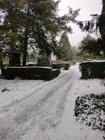
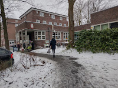

| Credit: RAF Valentines Day 1943 |
{kind=link}
Except … when I had asked my brother earlier that day whether he’d like to live in Hamburg, he thought not. ‘Too many horizontal bricks,’ he said. We laughed at him of course. ‘That’s the way bricks are laid!’ but when he pointed across the street to one of so many postwar, Lego-like, redbrick rectangular blocks we understood what he meant. The pervasive evidence of rebuilding.
My brother normally lives in former East Berlin, a city hung over by its own c20th history. Every week he flies to London for work – and it’s unnecessary to spell out the extent of reconstruction that has been needed there. Margery Allingham’s The China Governess (1963) is just one novel that uses the modernist rebuilding of London’s East End as an ambiguous, troubling background. She had been living in Essex, just outside London, throughout WW2 and was among the many who had become accustomed to the dull roar of bombers – ours and theirs. She had wondered whether it was appropriate to continue writing fiction at such a time. ‘Still, young men read thrillers when they’re flying out to bomb Kiel, and so maybe it was all right for middle-aged ladies to continue to write them’ at such a time' (Oaken Heart 1941)
Kiel is another rebuilt city that it’s somewhat uncomfortable to visit Nevertheless, among all the memories of havoc and destruction on either side of the North Sea, the bombing of Hamburg – Operation Gomorrah – retains a special horror. Indelible images of people burning as they ran for their lives in a firestorm, approximately 40,000 civilian deaths in just over a week, almost 2/3 of the total number of people killed by all the Allied bombing raids on Germany. 60% of houses destroyed.
 |
| Rahlstedt cemetery |
{kind=link}
Hans-Jürgen had rebelled against his country's past. He longed to travel. In 1968, aged 16, he was living in Ohio, at the time of the civil rights movement and the Vietnam war. He found a father figure, he was involved. When he returned to Germany he studied Russian history, law and business administration and became a communist. He wanted to become a teacher but under the radical decrees of 1972 (at the time of the Red Army Fraktin) this occupation was forbidden – berufsverbot – because of his affiliation. He married a fellow party member and settled back in Hamburg, eventually with five children. He became a successful insolvency administrator, specialising in salvaging and restructuring East German businesses, many of which were foundering in the stresses of reunification. He was passionate, imaginative. He took short cuts and disregarded protocols, believing that this was justified by the circumstances. There was no personal gain but suddenly he was arraigned, accused of fraud, a wanted man, a criminal.
In 2002 Hans-Jürgen vanished. From Hamburg, from Germany, from his family’s life. For six years they had no idea where he was or whether he was still alive. Their trauma was profound. As if a firestorm had swept through their existences.
When my sister-in-law, the oldest of the children, stood up to speak at the celebration of her father’s life, she took this abandonment and inflicted pain head on. Did not hide it; did not omit to speak of the time her father had also spent in Fuhlsbüttel prison on his return. For this celebration of his life, we had crossed the city from Rahlstedt to the Barmbec area of Hamburg-Nord. This was where Hans Jurgen had lived and worked for the rest of his life after his release. He had not changed his politics or his passion. He was a founder member of Die Linke party, fully involved in local and city politics and worked tirelessly for people oppressed by the system. His party paid tribute.
{kind=link}
He empowered countless people to stand up against bureaucratic arbitrariness and social welfare injustice. He carried out this work with great dedication, passion, and commitment. He would sometimes work through the night on a single case or prepare a presentation on a socio-political topic. Music, art, and political literature were important companions on his journey. Numerous texts and essays bear witness to his fight for social justice and security,equal opportunities, and the fight against poverty.
My sister-in-law didn’t gloss over the impact on his family of such dedication to his work, nor the irritation she’d felt as a young teen asking a simple question about agriculture in the Middle Ages and getting a detailed, lengthy exposition of Marxist – Leninist theory of the feudal system. But she also talked about music and love: listening and healing. Resilience and reconciliation. It was the most honest, loyal and grief-stricken eulogy I have ever heard. At the beginning she had said, ‘my father was an extraordinary man’ and at the end, ‘I think I have understood my father’.
 |
| Community Centre Barmbec Hamburg Nord |
{kind=link}
75 years earlier my uncle, the composer and organist Anthony Scott had been the navigator of a Lancaster bomber in those massed raids over Germany. I read an appreciation of him by Basil Ramsey, founding editor of Choir & Organ magazine:
This was a talented composer whose war years were spent in RAF Bomber Command as a navigator, and who took part in several of the massed raids on Germany which suffered severe losses. I did not know Scott before the war but saw clear signs of how such experiences had affected him when he was struggling for recognition as a composer.
I knew my uncle as a gentle, diffident person who took me riding on the Berkshire Downs and once with my mother to the Albert Hall to hear his friend Lennox Berkeley. I never knew what to talk to him about. He seemed so far away.
I feel certain that composers who were in the front line in whatever service had problems shedding the effects of battle when they returned to civilian life. Such a mental struggle was the same for any man, but those who were actively creative desperately needed the muse to return. War does sometimes generate a raging fire of emotions within creative artists that throws out poetry, prose, and music of a dramatic intensity commensurate with the event. In Anthony Scott I saw only a continuity of writing music. If the nights over flame-torn cities had seared his soul, he did not speak of this to me.
I cannot think that it would have been possible for my uncle to speak of this to anyone.
Hamburg – city of Brahms and Telemann, of CPE Bach, of Felix and Fanny Mendelssohn, of Mahler… we must return, learn to know it better, accept the ‘horizonal bricks’.
Before Operation Gomorrah (1943) the first thousand-bomber raid had taken place on Cologne / Köhn in May 1942. It should have been Hamburg, but weather conditions prompted a last minute change. In Köhn, this year, a new small publishing house has begun publishing some of the Golden Duck list of books. I hope they’ll soon invite me to visit. I shall certainly accept.
{kind=link}
{kind=link}